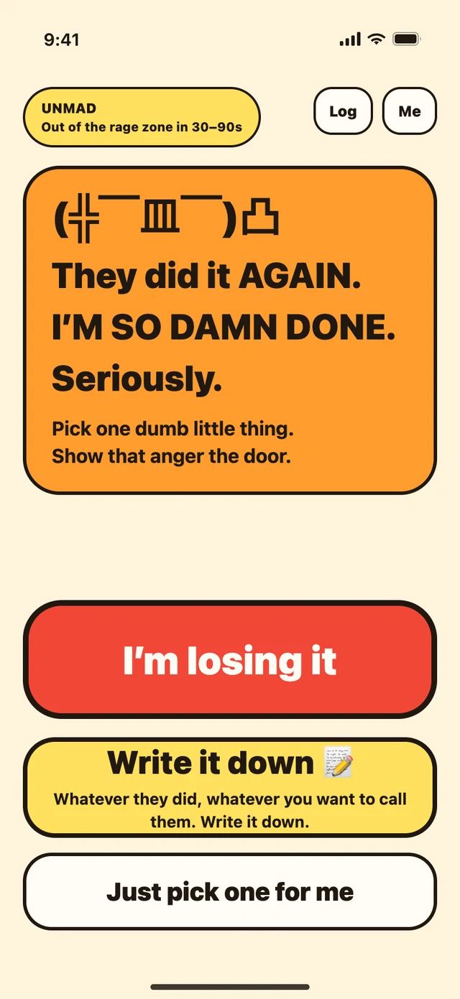
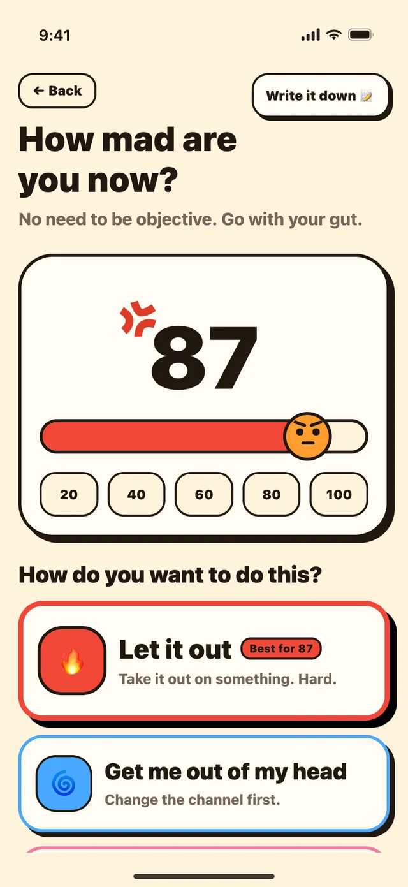
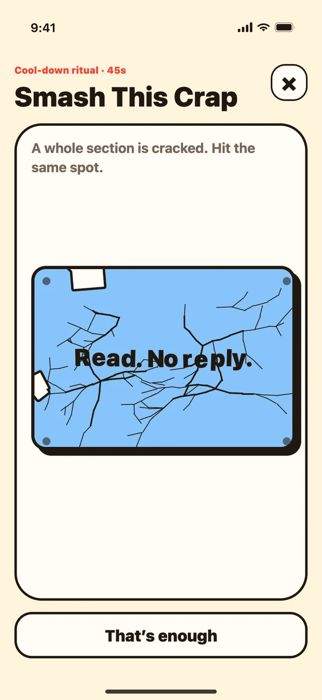
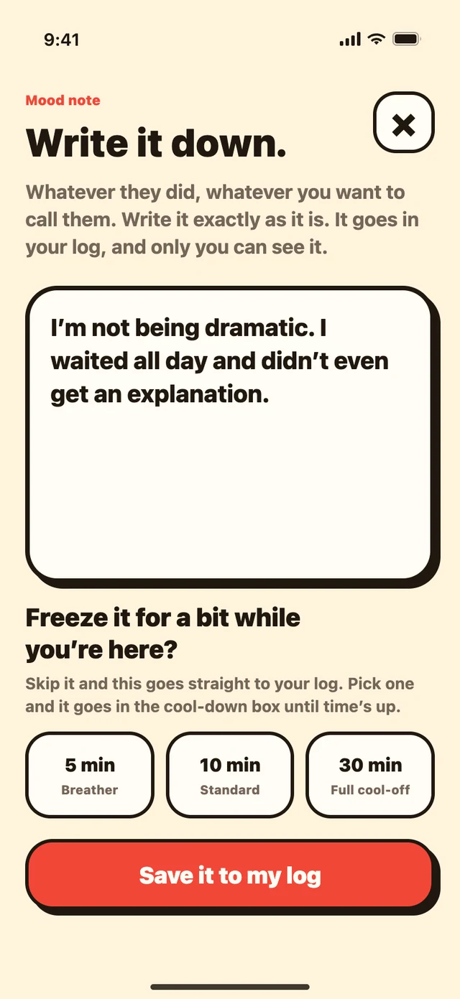
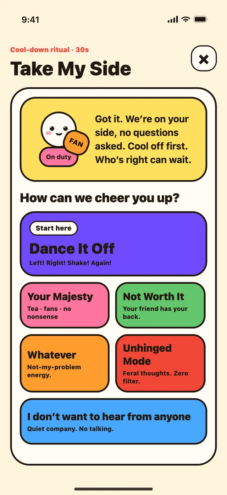
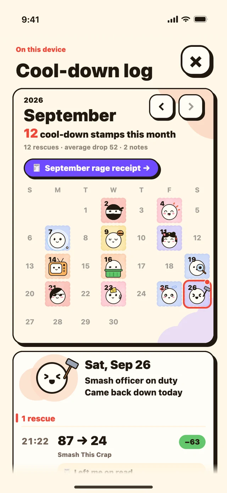
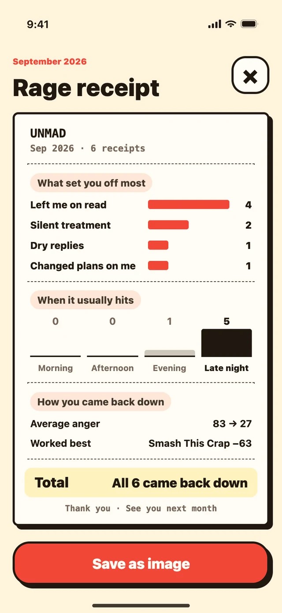

You just had it out with your partner
And you’re replaying it, and every replay makes it worse.
Anger relief for iPhone · 30–90 seconds
Nobody wants advice when they’re this mad. Unmad won’t tell you to calm down, and it won’t hand you a gratitude journal. It gives you something dumb and physical to do until the heat drops, then tells you to close it and go live your life.

What
Unmad is a small anger-relief app for iPhone. Not meditation, not a course, not homework. One round takes 30 to 90 seconds, and it goes like this:
Drag the slider. No need to be objective, go with your gut. An 87 and a 30 don’t get the same treatment.
Pick a way in: let it out, get out of your head, or just get comforted. Then smash, slice, pop, tap or dance it off.
See where you landed. Still fuming? It suggests the next thing. Better? Close the app and go live your life.

Who
Anyone who’s ever sat there shaking, phone in hand, after it happened again.
And you’re replaying it, and every replay makes it worse.
Write it here instead. Every word of it. Unmad has no send button.
Same. There’s none of that in here. You get to be unreasonable for a minute.
No account, no sign-in, no cloud. What you write is for your eyes only, on your phone only.
When
In the worst thirty seconds. Then close it. There are no streaks and no daily reminders, because we’re not going to reward you for being angry every day.
Right after the fight
Take it out on a slab instead of on them. It cracks wherever you hit it.
Left on read
Put it on a receipt. Over a month you’ll see if it was a one-off or the same thing every time.
Thumb over “Send”
Write it down and put it on ice for 5, 10 or 30 minutes. Decide when the timer’s up.
2 a.m.
Change the channel. Give your brain something else to chew on until you can sleep.
You don’t want to be reasonable
Pick a way to be comforted and it does the rest. You don’t have to do a thing.
Better now
Close it. That’s the whole point. Go live your life.
Features
No lessons and no “what are you grateful for today.” Just a handful of small, dumb, very satisfying things.
When your hands need something to do
When thinking about it makes it worse
When you only want someone on your side

Type the thing that’s getting to you and it turns into a slab. Tap for a normal hit; hold and let go for a heavy one. The cracks spread out from exactly where your finger landed, and the last hit blows the whole sentence apart.
Smashed. No refunds.
Whatever you want to call them, write it exactly as it is. It goes into your log, so you can read it back whenever you want.
If it was meant for someone, put it on ice first: 5, 10 or 30 minutes, then decide whether it still needs sending. That part’s optional. Skip it and it’s just a mood note.
Either way, the words don’t go anywhere. Unmad has no send button. It only ever hands them back to you.


Sometimes you don’t want to do anything. You just want someone to say it’s not your fault. Pick how you want to be comforted and it keeps going, no input needed.
Get treated like royalty in Your Majesty, let your friend tell you they’re not worth it, go full Unhinged Mode, or Dance It Off to one of four songs made just for Unmad.
Not the times you lost it. 87 → 24, how far it dropped, which activity actually works for you: it’s all in there.
Every day you bounce back, an officer goes on duty in your log, matched to what got you there: the Smash officer if you smashed your way down, the Merit officer if Tap for Merit did it.
No streaks. Miss a day and nothing happens. That’s a good day.


When a round’s done, put it on record: left me on read, dry replies, changed plans on me. Tap what they did, and add a line if you want.
Keep a few and each month gets its own receipt: what set you off most, when it usually hits, what brought you back down. Not to throw at them someday. It’s so you can see for yourself if it’s a one-off or a pattern.
Save it as an image if you want. None of your own words go on it.
No servers, no login, no ads, no analytics, no third-party tracking. That’s not a promise not to look. The app simply never sends anything anywhere. Even the rage receipt image only leaves your phone if you tap share yourself.
FAQ
A free anger-relief app for iPhone. When you’re furious, it gives you 30 to 90 seconds of something to do (smash it, slice it, write it down, or let it comfort you) so you can get out of the rage zone without anyone telling you to calm down.
Nothing. No in-app purchases, no subscription, no ads.
No. There’s no sign-up and no login, and Unmad makes no network requests at all, so it works the same in airplane mode.
Nowhere. Your log, everything you write and your settings stay on your iPhone. They’re excluded from iCloud and computer backups, and deleting the app deletes them.
No. Unmad has no send button at all. Even with a cool-down timer set, all that happens when time’s up is that you get to read it again and decide for yourself.
No. It doesn’t assess, diagnose or treat anything, and it isn’t a course or a program. It’s for the worst thirty seconds. If you need real help, please talk to a professional.
Not right now. Unmad is iPhone only and needs iOS 15.1 or later.
English and Simplified Chinese (in Chinese it’s called 不气了). It follows your phone’s language, and you can switch it under Me.
Email hellounmad1@gmail.com with your device, iOS version and app version (Me → About Unmad). Me → Feedback in the app opens your mail app with the address filled in.
Have it on your phone before you need it.
One note: Unmad is not counseling and not a medical service. It doesn’t assess, diagnose or treat anything. It just gives you somewhere to put the worst thirty seconds. If you need professional help, please contact a professional. If you are thinking about hurting yourself, please contact your local emergency services or a crisis line right away.